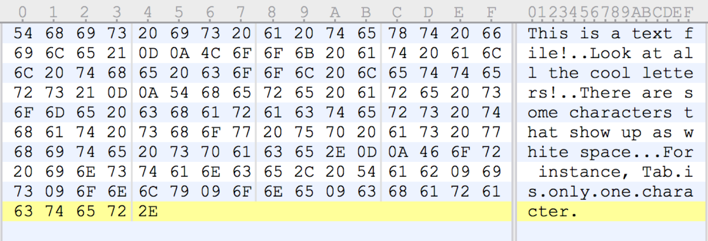
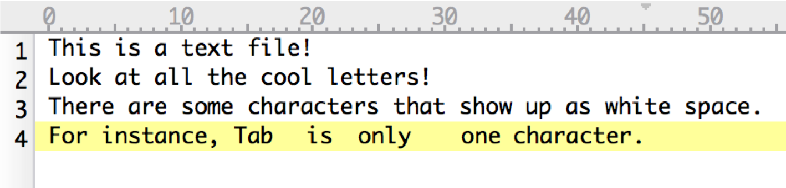
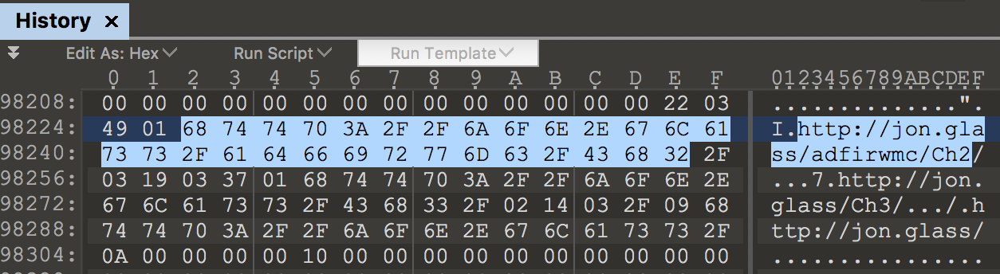
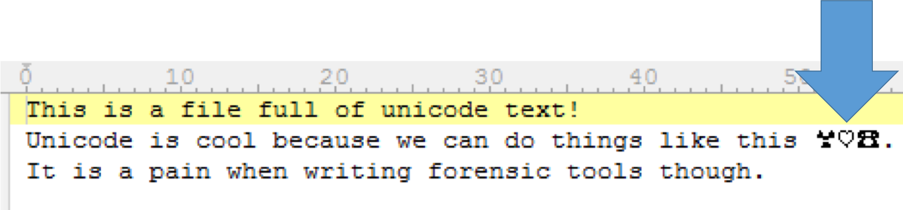

ADFIRWMC - 3. The Value of Unstructured Analysis
For me, I find performing unstructured analysis upfront to be critical part of my work flow because it tells me massive amount of contextual data upfront and it focuses the structured analysis I need to accomplish.
When I say unstructed analysis, I am referring mostly to searching through the strings inside of the artifacts I have collected for keyword matches. Where do these keywords come from? Unless you are on a complete witch hunt, which unfortunately happens, there is a set of circumstances that led you to investigate this system. It could be an alert from weird proxy traffic or an antivirus hit on a file found in a User’s Temp folder.
Whatever it is, these events typically have fun details that you can search for. (90% of the time it ends up being some part of a file path or part of a URL.) Let’s look at a little bit of science before we get into DFIRness of it all. This topic can get hopeless deep and veer of course quickly so I am only covering the meat and potatoes.
Strings
A string is a data type used in programming, such as an integer and floating point unit, but is used to represent text rather than numbers. Most of the words you read on a computer are stored as a string on disk or in memory. For instance, by visiting this site, your browser has probably stored a cached version of this page to a temp folder somewhere in your profile. On top of that, your browser also needs this page’s content in its process memory in order to render it. Strings get thrown all over the place by doing even the most mundane tasks. Knowing the significance of where strings are found can make your life a lot easier.
ASCII
- Stands for American Standard Code for Information Interchange but you will never need to know that.
- Even though ASCII predates epoch and maybe even time itself, it is the basis for most modern character-encoding schemes.
- Ascii is a code for representing English characters as numbers, with each letter assigned a number from 0 to 127
- Not all ASCII characters are visible text.
- Some are used to control how text is displayed like 0x0A New Line or 0x09 Tab.
- Some are strictly for commands like Escape 0x1B or Delete 0x7F.
- Reference: https://www.asciitable.com/
Example:

Example displayed:

Fun ASCII DFIR stuff you might find:
- Browser History, Cookies, etc. are stored in ASCII in Chrome, FireFox, Internet Explorer, and Edge.(Probably others too.) 
Unicode
- Like ASCII but bigger
- Unicode is a standard which defines the internal text coding system in almost all operating systems used in computers at present.
- Version 1 started out with 65536 code points, commonly encoded in 16 bits or 2 bytes.
- The current version is 6.3, using 110,187 of the available 1.1 million code points.
Example:

Example Displayed:
